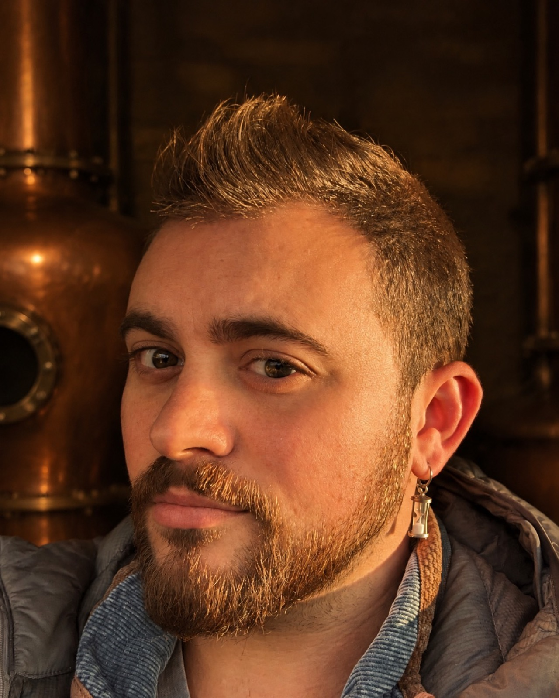
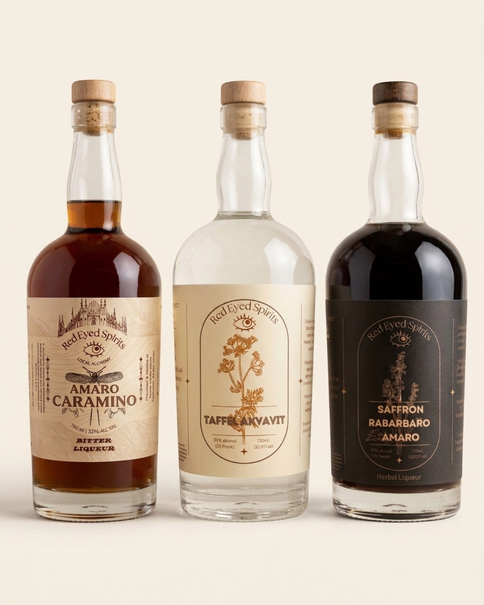
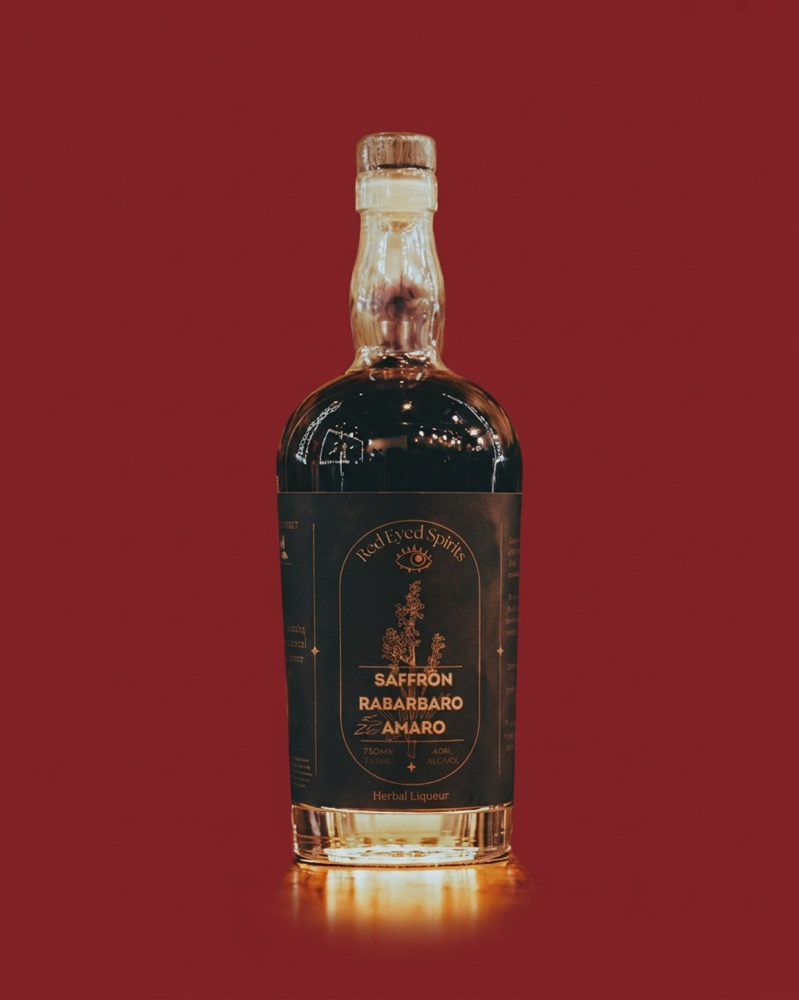
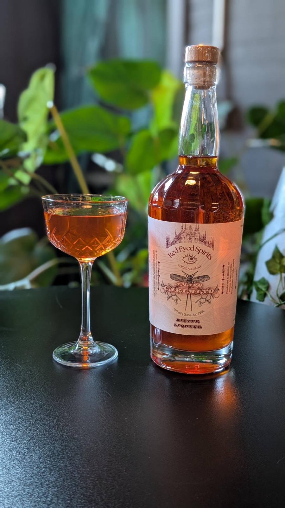
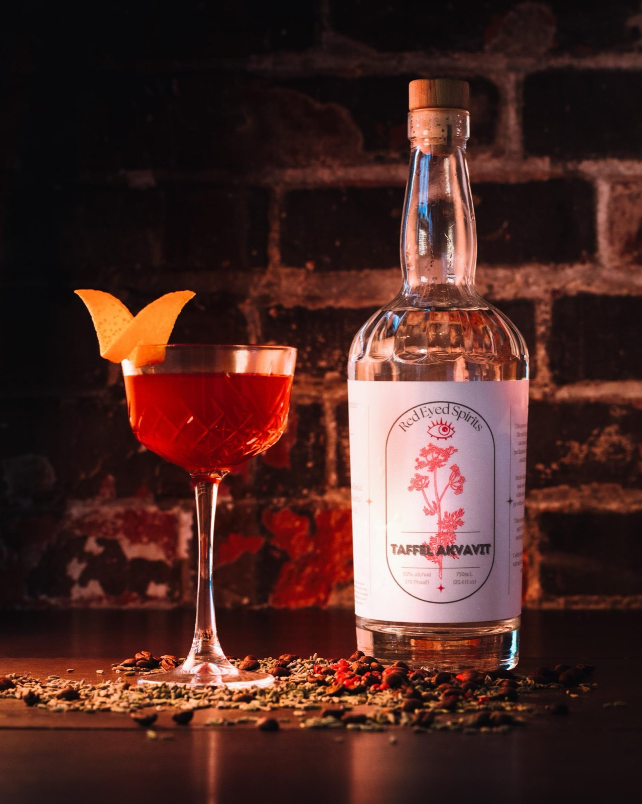
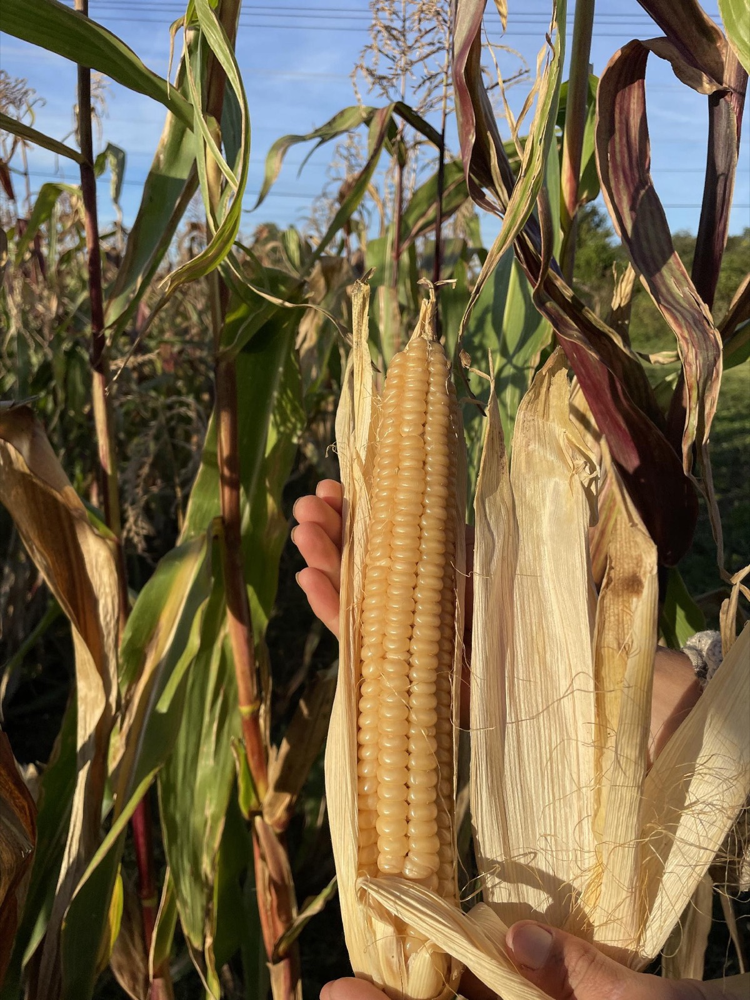
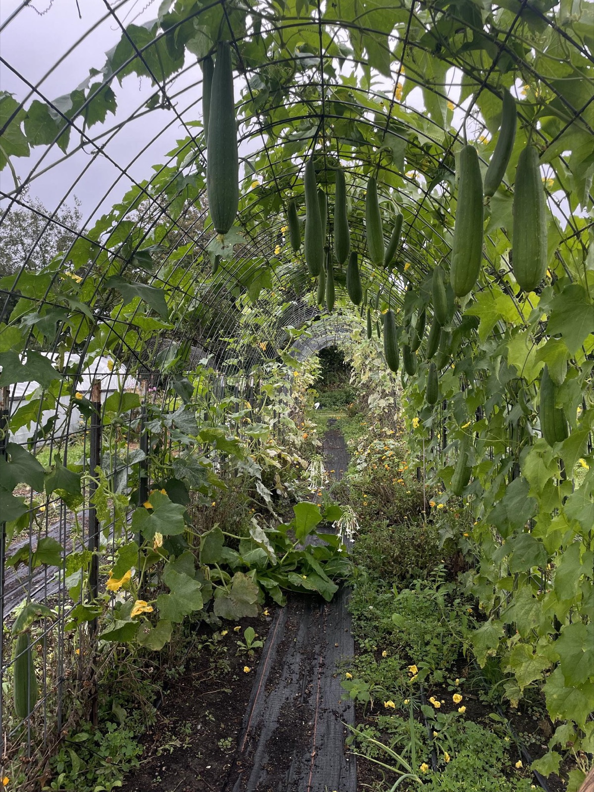
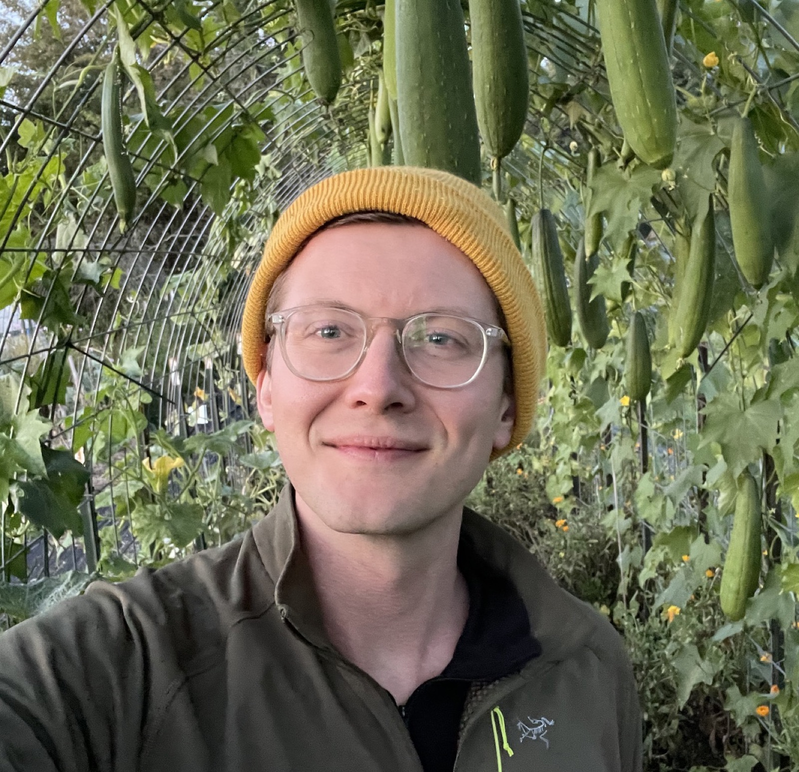

Founder · Master distiller
Joey Steadman
A chemist and self-taught distiller who has built quality labs and production programs for spirits brands across Rhode Island. He brings that rigor to every bottle.
Award-winning amari, liqueurs and botanical spirits, made with local botanicals and a chemist's rigor.

A modern twist on a Bolognese-style amaro.
Delicate saffron and local botanicals from our friends at Hawk and Handsaw Farm in Portsmouth, RI. A Best in Class finalist for Botanical Liqueurs, the first ever from Rhode Island.
"Vibrant aromas of saffron and fresh herbs... a refreshing minty lift, delicate bitterness, and lingering saffron that ties the flavors together with impressive depth and elegance."2026 Tasting Alliance judge


A Milanese-style amaro.
Sweet and bitter orange peel, cherry bark, kola nut, wormwood, grains of paradise, ginseng and 11 more botanicals. Naturally colored with cochineal, sweetened with local honey and orange oleo saccharum.
"A distinctive, bittersweet amaro... blood orange, grapefruit, and classic wormwood-driven aperitif bitterness."2026 Tasting Alliance judge
Say it "TAFF-uhl AH-kwah-veet."
An unaged caraway spirit in the traditional Danish style. Caraway, dill and pink peppercorn, with fennel and anise underneath and clementine zest, coriander and lavender on top.
"A clean and approachable aquavit... a silky palate with soft caraway and dry grain, finishing with lingering pepper spice."2026 Tasting Alliance judge

We work with our friends at New England farms to source ingredients this region knows and celebrates, like White Cap Flint Corn, Rhode Island's official state corn.
Then we treat tradition like a chemist would.



A chemist and self-taught distiller who has built quality labs and production programs for spirits brands across Rhode Island. He brings that rigor to every bottle.

Professional forager, restaurant and bar industry veteran, and molecular biology PhD candidate at Brown University.
Rhode Island's first Best in Class finalist, headed to The Tasting Alliance gala at Hotel Nikko.
A medal-winning tasting flight with RI Spirits at The Rhodium Room, Pawtucket.
Want us on your shelf or your menu? Planning an event? Writing about us? Send a note, or DM @redeyedspirits.